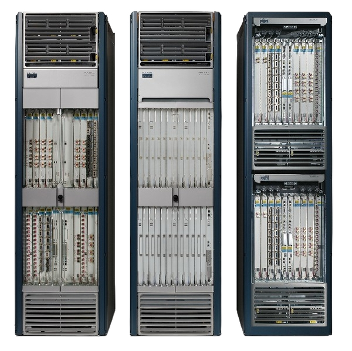

Tipos de Routers
Router Principal
Un router principal o "core" es un enrutador designado para operar en las redes centrales de los
proveedores de internet, siendo capaz de soportar múltiples interfaces de red, reenviar simúltaneamente paquetes IP
a toda velocidad y hacer uso de los diferentes protocolos de enrutamiento que se utilizan dentro del núcleo.

Router Empresarial
Un router empresarial o "enterprise" es un equipo de alto rendimiento optimizado en funciones y caracteristicas
para el sector de oficinas, negocios y empresas, de las cuales se mejoran aspectos como la seguridad (VPNs y firewalls),
la capacidad para múltiples usuarios, el rendimiento, la cobertura y la escalabilidad.

Router Inalámbrico
Un router inalámbrico o "wireless" es un dispositivo que realiza las funciones de un enrutador, pero también incluye
las funciones de un punto de acceso; su funcionamiento es básico, y normalmente sólo se usa para distribuir el
acceso a internet de manera inalámbrica a través del enlace principal del proveedor de servicios.

Aplicaciones
Provedores de servicios
Dado que los routers principales proporcionan el máximo ancho de banda posible para conectar diferentes nodos dentro
de una gran red de área extensa, estos equipos son usados por proveedores de servicios masivos como AT&T, Verizon, Vodafone
o proveedores de la nube tal que Google, Amazon, Microsoft.
Empresarial
Por otra parte, los routers empresariales al poseer mejor calidad de hardware se les permite un mayor número de dispositivos
conectados y una mejor gestión de seguridad de red a través de protocolos, convirtiéndose en el equipo ideal para
entornos empresariales donde es imprescindible un rendimiento estable, seguro y rápido.
Residencial
Los routers inalámbricos son comunes en las redes domésticas y de oficinas pequeñas, ya que la mayoría de los proveedores
de servicios proporcionan este tipo de dispositivos con funciones muy básicas para entornos de red sencillos en donde no se
presenten amenazas de red y carga de datos muy demandante.

Comparativas
Routers
|
Inalámbricos |
Empresariales |
Principales |
| Usos |
Redes domésticas y pequeñas oficinas. |
Entornos empresariales con alta demanda de conectividad y seguridad. |
Redes centrales de proveedores de servicios de internet (ISP) |
| Capacidad |
Limitado a pocos dispositivos conectados simultáneamente. |
Soporta un alto número de usuarios y conexiones simultáneas. |
Maneja miles o millones de conexiones a alta velocidad. |
| Seguridad |
Seguridad básica, generalmente con WPA/WPA2 y firewall básico. |
Seguridad avanzada con soporte para VPNs, firewalls robustos y segmentación de red. |
Seguridad de nivel operador con protección contra ataques de gran escala y redundancia. |
| Cobertura |
Cobertura limitada, adecuada para entornos pequeños. |
Mayor cobertura con tecnologías avanzadas para optimizar el rendimiento. |
Máximo rendimiento y cobertura de ancho de banda para interconectar grandes redes. |
| Escalabilidad |
No escalable, diseñado para redes pequeñas y simples. |
Moderadamente escalable, permite la expansión en entornos empresariales. |
Altamente escalable para manejar grandes volúmenes de tráfico. |
Configuración y tutoriales
La instalación y configuración de tu router dependerá principalmente del fabricante de tu equipo;
existen equipos que son fáciles e intuitivos de manejar gracias a que poseen interfaces gráficas que facilitan la configuración, por otra parte,
se pueden encontrar dispositivos los cuales se configuran únicamente bajo instrucciones dentro de una terminal de comandos,
no obstante, a continuación te proporcionaremos los enlaces a las principales fuentes de documentación de cada uno de los
fabricantes de equipos de red más reconocidos dentro del mercado actual.